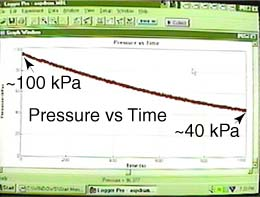

 |
The aspirator was used on the laboratory sink in Dan's laboratory room, and he had a pressure sensor attached to the drum. He lowered the pressure in the drum to about 40 kiloPascals, about 40% of atmospheric pressure. The drum used had a surface area of about 3000 square inches, so a 40 kPa internal pressure would cause the atmosphere to exert a net inward force of about 26,000 pounds or 13 tons on the walls of the drum.
|